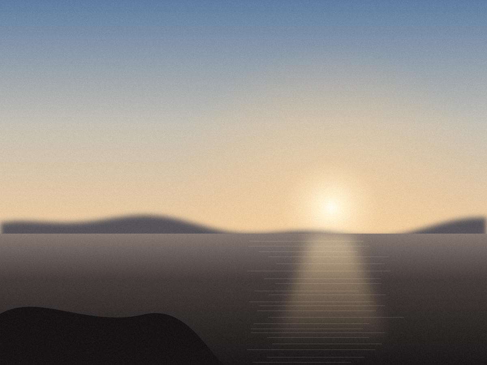

Starting point. The repo's current editor is a scrolling stack of three stage cards with stock SwiftUI sliders. Everything below keeps the engine's vocabulary (ranges, captions, conditional visibility read from EditorModel) and replaces the scroll with a fixed 316 pt deck. Reference photo is a synthetic placeholder — drop a real frame into assets/reference.png and every screen re-grades.
Calls made. Accent is film-base orange oklch(0.74 0.15 55): it is the colour of an unexposed C-41 negative's mask, so it reads as "this is the film's own value" on detents and defaults — and it sits far from skin and sky, so it never argues with the grade. Safelight amber is more saturated and would compete with HDR highlights. Text face is SF (system), numerals SF Mono with tabular figures. Chrome is 3 near-blacks: #050505 behind the photo, #121214 deck, #1C1C20→#26262B raised controls.
Deck anatomy (top→bottom): stage selector 36 · live sub-label 14 · parameter row 34 · active control 112 · actions 40 · home indicator. Stock (Film) and Scan/Print (Lab) are persistent slots at the left of the parameter row, not chips — they are modes, so they never scroll away. Captions live in a reserved 2-line slot under the track (option A, recommended over an ⓘ popover — see 1m), so the deck never reflows.

Photo at 63 % of the display, fully visible above an opaque deck. Exposure is the active control at rest because it is the first thing a photographer reaches for; the amber tick at 0 EV and the "DETENT" tag say the value is the film's own. The caption slot below the track is empty at rest — summoned by touch.
While a finger is down the deck goes quiet: the compare pill and ⓘ hide, the actions row dims, and the caption fills its reserved slot. The track is draggable from anywhere in the deck's width — the finger ring is offset from the indicator to show relative drag. Amber fill runs from the 0 detent to the value, so bipolar direction is legible at a glance. Readout is tabular SF Mono at 34 pt: nothing jitters.
Yes — stock selection replaces the parameter row and scrubber (same 156 pt), because a 100×80 live thumbnail is the control. The strip is a real 135 strip: sprocket rebates, frame numbers, a 3 pt process-coloured edge per cell (C-41 orange, E-6 blue, B&W silver, ECN-2 green), legend below. Selected cell gets the amber ring and name. "Controls" returns to the chips; the stock slot in the chip row (see 1d) re-opens it.
The stock slot (thumbnail + name, silver B&W edge) is persistent at the left; chips shrink to three because Tri-X carries no bloom or halation — the row just has more air. Contrast filter is a discrete control, so the active area swaps the track for six glass discs: a highlight, a dark lower rim and real shadow so they read as filters, not swatches. The readout names the glass and its published factor.
On a reversal stock the Scan/Print slot is simply absent and the sub-label says why. The three geometry chips start from the left; the deck's frame does not move. Vignette at zero reads "none" in dimmed type with an amber "OFF" tag and the indicator parked at the range limit — off must look off. Border at 12 % (the rebate) is shown modified for contrast.
Scan/Print gets the persistent left slot (a mode, milled segmented control), and when it is the active control the scrubber area becomes two cards describing the two pictures. Tapping the slot toggles immediately; the card view is what you get when you want to read why. Amber on "Print" marks a departure from the default read.
Held: the pill inverts to paper-white "Original" (the only light surface in the app — it means "not graded"), the render-time pill hides, and the whole deck drops to 60 % so the eye stays on the image. Transition: image swaps instantly (no crossfade — you are comparing, a fade lies), pill inverts over 120 ms. Release restores everything in one step. VoiceOver gets a toggle action.
The frame where the photo will go is drawn as an empty gate. The deck is present but flattened: chips read "—", the track has no indicator, buttons lose their raised face. Only two actions stay live — Photo, promoted to the one amber primary button in the app, and Contact Sheet, which needs no photo. No top bar anywhere: nothing earned it.
Not recommended. Immersive, but 37 % of the frame sits behind blur and the deck's tint is the photo's colour — the chips change colour as you grade, so the chrome stops being a neutral reference. A 4:3 or 3:2 photo also has to be cropped to fill portrait, and you cannot judge a vignette or frame border you cannot see the corners of.
Recommended. Your instinct holds. The whole frame is visible, the surround is a fixed #050505 so the eye has a constant black reference for HDR highlights, and the deck is a real surface rather than a tint of the picture. The cost is ~60 pt of height on a 4:3 frame, which the pipeline cannot show anyway. Portrait photos get taller; the deck never moves.
Only two gestures survive: horizontal drag (a finer twin of the scrubber, with a transient readout so you never look down) and pinch for a 1:1 loupe. Both have non-gesture equivalents — the scrubber itself, and a loupe toggle in the Sheet action's long-press menu. Everything else was a gesture for its own sake.
A detented sheet at 500 pt: the photo stays visible above because you may want to glance at it while choosing P3 vs sRGB. Two segmented controls in the deck's milled style, then the two actions with the LUT caveat set in the same voice as the parameter captions — plain, one bolded clause, no warning icon.
Determinate progress as the thing it is: a 6×4 grid of tiles, filled in render order, the current tile half-lit. Format and colour lock (dimmed) once the render starts; Done is disabled until it finishes or is cancelled. Cancel is the one destructive button — red text on the standard raised face, never a red slab.
Two states stacked for review. The thermal notice is a plain row with an amber dot — the same colour that means "the film's own value" elsewhere, here meaning "the engine chose for you"; no thermometer icon, no yellow warning. Finished shows the file as a record (name, pixels, gamut, size, tile count and time) and one amber Share.
Name field with amber caret and Save on one line; the helper sentence says exactly what will be kept (a preset is a stock plus every setting). Rows carry a live thumbnail rendered through the preset and a mono summary line. Swipe-to-delete is the system red — destructive stays system-conventional so it is never mistaken for the amber "film's own value".
A proof sheet, literally: one dark paper, sprocket strips top and bottom, 3-up frames with the frame number set in each stock's process colour. One grease-pencil circle in film-base orange marks the stock currently loaded in the editor — the only decoration in the app, and it is doing a job. Not grading here, so the deck is gone and the close button is a single machined ×.
tabular-nums; signs and units are always present ("+0.0 EV", not "0"). Large text: captions wrap to 3 lines and the readout drops to 28 pt; the deck grows by one 14-pt line and the canvas gives it up — nothing else moves.
.light on press for every button; segmented uses .selection.
.rigid haptic
.rigid once on arrival; indicator sticks for 6 pt of travel; amber tick brightens 120 ms. Applies to 0 EV, the stock's Kelvin balance, box development, 100 % on bloom/halation/grain, zero on all geometry.
step.selection (soft) on each ⅙-stop, 50 K, ⅓-stop-of-time step. Off under Reduce Motion? No — haptics stay; only animation is removed.
range limit.heavy once; end wall lights; no overscroll, no bounce.
threshold.medium when the shutter dial crosses the reciprocity threshold or Temperature crosses the stock's balance; caption text swaps with a 90 ms crossfade.
stage switch.selection; raised face jumps to the new segment (0 ms), chips and control swap in 80 ms with a 4 pt horizontal slide in the direction of light. Never slower.
parameter switch.light; readout and track swap in 60 ms; caption slot clears then fills. No spring.
reset.rigid; value animates to default in 160 ms ease-out (instant under Reduce Motion); the modified dot fades.
stock change.medium; canvas re-renders live (no fade); the strip's amber ring slides to the new cell in 120 ms.
compare.light on engage and release; image swaps instantly, pill inverts in 120 ms.
#F4F2EE canvas surround stays #050505 — the photo always sits on black.
Try next: "make 1a interactive" · "show 1b at the largest Dynamic Type size" · "try the shutter dial as the active control on Cinestill" · "light-mode pass of 1a and 1l"